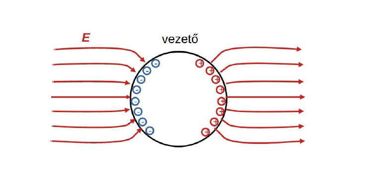
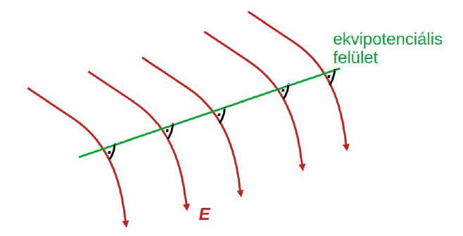

Villamosságtan
Tartalomjegyzék
Általános tudnivalók
- Minden labort teljesíteni kell az aláíráshoz
- Két mérés pótolható a pótlási héten
- Van beugró
- Mérési útmutató
- Folyamatosan ellenőrizni kell, hogy meglett-e az adott labor
- Gyakorlatok nem kötelezőek
- Lesz vizsga
- Egész sok számolás lesz
- Vannak olyan anyagok, amik gyakorlaton nem jelennek meg, viszont a vizsgán kellenek
- Diasorból fel lehet készülni elvileg
- Két házi
- Első házi feladat leadási határidő: április 26. 12:00.
- Második házi feladat leadási határidő: május 24. 12:00.
- Házi feladatok pótleadási határideje: május 31. 12:00.
Nem kötelezők a gyakok
Előadások
1. Előadás
Elektrosztatika
Ha két anyag töltése ugyanaz, akkor taszítják egymást, különben vonzzák Töltés jellemzi az anyag tulajdonságát.
Coulomb-törvény
Töltés mértékegysége Coulomb
Vákuum dielektromos állandója
A töltés létrehoz maga körül egy teret (részecskékből/energiacsomagokból) és ez a tér fénysebességgel terjed a töltés körül
A két töltés egy közvetítő térrel hat kölcsön
Villamos térerősség
- Az egységnyi pozitív pontszerű töltésre ható erő
Erővonalakkal lehet szemléltetni
Erővonal Tegyük fel, hogy belehelyezünk a térbe egy pozitív pontszerű egység töltést. Ekkor a töltés mozgása egy erővonalat ír le. Minél sűrűbbek a vonalak annál nagyobb a térerősség.
Pontszerű töltés térerőssége
töltésű pontszerú térerőssége távolságra
Töltésmegosztás


Elektrosztatikus térbe helyezett vezető gömb esetén töltésmegosztás jön létre. Amint az egyensúlyi állapot beáll, a gömb felülete töltötté válik, a felületen az elektrosztatikus tér erővonalai merőlegesek a felületre. A gömb belsejében a térerősség nulla.
Villamos potenciál
A tér egy adott 1 pontjának 0 referenciaponthoz képesti potenciálja: az a
munka, mely ahhoz szükséges, hogy egy pozitív egységnyi töltést a
villamos tér ellenében a referenciapontból az 1 pontba mozgassuk. A
referenciapont potenciálját 0-nak vesszük
Differenciális alak:
- vektor aminek minden koordinátája egy-egy deriválás
Elektrosztatikus tér esetén az útvonal nem számít csak a két pont helyzetétől
Ekvipotenciális felület
Azon pontok halmaza, amelyek azonos potenciálértékkel rendelkeznek

Feszültség
A feszültség () két pont közötti potenciálkülönbség
Magasabb-ból mutat az alacsonyabb felé
Eltolási vektor
, villamos tér jellemzésére használjuk a térerősség mellett
Térerősség fluxusa
Felületi integrál